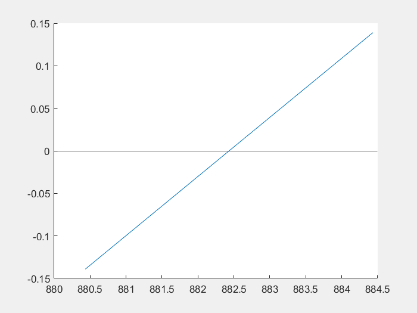

{% extends 'home.html' %}
{% block content %}
{% block title %}
Método de la secante
{% endblock %}
El método numérico de la secante es un método iterativo que se utiliza para encontrar las raíces de una función. El método comienza con dos puntos iniciales, a y b, y luego calcula el punto medio de la secante que pasa por estos dos puntos. Este punto medio se utiliza como el nuevo punto inicial para la siguiente iteración. El proceso se repite hasta que se alcanza la raíz deseada.Recuerda usar la sintaxis de matlab para rellenar los campos.
{% if secante_model %}
Resultado

{% endif %}
{% endblock %}